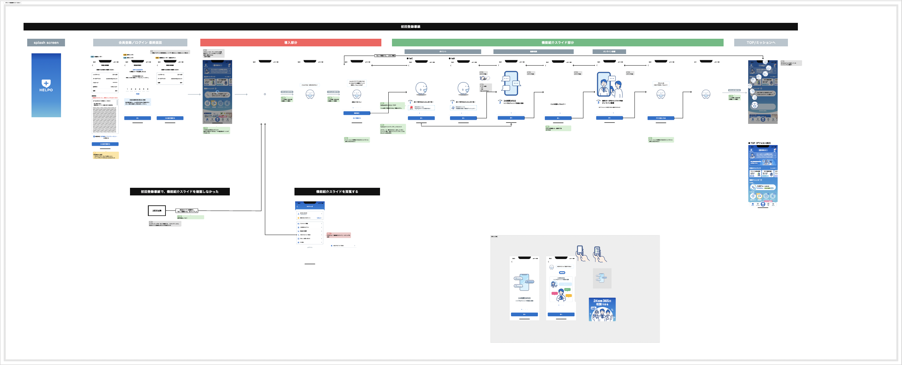

「使いたい」気持ちを、入力フォームで冷めさせない。
アプリ起動から登録完了までのファネル分析に基づき、ユーザーの「つまづきポイント」を特定。心理的負担を最小化するUI設計で、CVR向上を実現。
Role
UI/UX Designer
Timeline
3 Months
Method
Phased Approach
ヘルスケアアプリ「HELPO」とは
- Client
- ヘルスケアテクノロジーズ株式会社
- Core Value
- 「未病」から「治療」までをワンストップでサポートし、心理的な安心を提供する。
24時間365日、医師・看護師・薬剤師などの医療専門チームにチャットで相談できるヘルスケアアプリ。 オンライン診療や処方薬の配送、歩数計などの健康管理機能も備えた「スマホ上の病院・薬局」のような総合プラットフォーム。

The Challenge
ダウンロード直後の「熱」を、
登録完了まで維持できない。
アプリは多機能であるがゆえに、「何ができるアプリなのか」を登録前に理解しづらく、さらに登録時の入力項目が多いという「二重の壁」がありました。ログ分析の結果、アプリ起動直後の離脱（直帰）と、入力途中の離脱の双方が課題であることが判明しました。
ユーザーの「期待値」を高めつつ、「面倒くささ」を極限まで減らすにはどうすべきか？
Motivation: 機能紹介アニメーション導入
いきなり個人情報の入力を求めるのではなく、まず「このアプリを使うとどう便利になるか」を直感的に伝えるウォークスルー画面を新設しました。
Storytelling
「体調不良→相談→解決」という利用シーンをLottieアニメーションで表現。
Micro-Interaction

画面遷移に合わせてキャラクターが動く演出を入れ、ポジティブな第一印象を形成。
Ability: 会員登録フローの整理と改修
モチベーションが高まったユーザーを、躓かせずにゴール（登録完了）まで導くための、データドリブンなUI改修を行いました。
📊 Funnel Analysis: 離脱ポイントの特定
調査資料 より、特定の入力画面での離脱が突出して高いことが判明。
Before: 課題のあった画面

1画面に大量の項目が並び、エラーも送信するまで分からない状態。
After: 改善後の画面

項目をステップ分割し、リアルタイムバリデーションを導入してストレスを軽減。
Outcome
感性と論理の両輪で、CVRを最大化
Phase 1（機能紹介）による「なんとなく離脱」の防止と、Phase 2（EFO）による「入力ミスの低減」を組み合わせることで、登録完了率（CVR）の大幅な改善と、ユーザーからの「スムーズに始められた」という高評価を獲得しました。
Skill Matrix
| Classification | リサーチ | リサーチ | リサーチ | デザイン | デザイン | デザイン | デザイン | デザイン | 進行管理 | 進行管理 | プロジェクト | プロジェクト | プロジェクト |
|---|---|---|---|---|---|---|---|---|---|---|---|---|---|
| Skill | ユーザー調査 | ユーザー分析／ モデリング |
ユーザー評価 | コンセプト定義 | 体験設計／ ユーザー要求仕様作成 |
プロダクトやサービスの 要求仕様作成 |
情報設計／ デザイン仕様作成 |
プロトタイプ作成 | 進行管理 | ワークショップ | ビジネス課題の特定 | プロジェクト設計 | プロジェクト運営 |
| Details |
スキル概要
手法/成果物例 調査設計書、リクルーティング、ユーザーインタビュー（デプスインタビュー）、エスノグラフィー、コンテクスチュアルインクワイアリー |
スキル概要
手法/成果物例 KA法／KJ法、上位下位関係分析、価値マップ、ペルソナ、カスタマージャーニーマップ（As-Is） |
スキル概要
手法/成果物例 手法：ユーザーテスト、コンセプト評価、価値検証、ユーザビリティテスト、実証実験 評価対象：サービスやアイデアのコンセプト、サービスやプロダクトの体験、サービスやプロダクトのユーザービリティ 成果物例：テスト設計、インタビューガイド、リクルーティング、評価レポート |
スキル概要
手法/成果物例 UXゴール、バリュープロポジションキャンバス、コンセプトシナリオ、1枚企画書、コンセプトシート、ビジネスモデルキャンバス |
スキル概要
手法/成果物例 カスタマージャーニーマップ(To-Be)、構造化シナリオ法、サービスブループリント、CVCA、アクティングアウト |
スキル概要
手法/成果物例 ユーザーストーリーマップ（特に機能面）、開発要件定義書、プロダクトバックログアイテム、プロモーションプラン |
スキル概要
手法/成果物例 コンセプトムービー、4コマシナリオ、アクティングアウト、ペーパープロトタイプ、モックアップ、ホットモック、データプロトタイプ、プレスリリース、ビジュアルプロトタイプ |
スキル概要
手法/成果物例 サイトマップ、コンテンツマップ、ナビゲーション設計、画面遷移図、ワイヤーフレーム、WEBサイトやアプリ等の画面デザイン、デザインシステム、UIガイドライン |
スキル概要
手法/成果物例 スケジュール表、タスクリスト、稼働リスト |
スキル概要
手法/成果物例 ワークショップ計画、KJ法やコンセプトアイデアや体験設計などのワークショップ |
スキル概要
手法/成果物例 案件の立ち上げ、提案書、顧客インタビュー、解決すべきビジネス課題 |
スキル概要
手法/成果物例 プロジェクト計画書（プロジェクトゴール／成果物／プロセス／アクティビティ等を含む）、チームのメンバー構成、社内外のアサイン調整 |
スキル概要
手法/成果物例 インセプションデッキ、修正されたプロジェクト計画書 |
| Status | |||||||||||||
| Rank | R3 | R3 | R3 | R3 | R3 | R3 | R3 | R3 |
Skill Evaluation
本プロジェクトにおける職能要件の充足状況と根拠
リサーチ
| スキル名 | ランク | 評価理由・実績 |
|---|---|---|
| ユーザー調査 | R3 | ロイヤルユーザー（N=7）に対し、N1分析（デプスインタビュー）を実施。行動変容の時系列変化（きっかけ〜習慣化）を深く掘り下げているため。 |
| ユーザー分析／モデリング | R3 | 単なる属性ではなく「感情トリガー」に基づいた4つのペルソナと、それぞれのカスタマージャーニーマップを作成しているため。 |
| ユーザー評価 | ─ | ※特定のUIやプロダクトの検証（ユーザビリティテスト等）は本プロジェクトのスコープに含まれていないため。 |
デザイン
| スキル名 | ランク | 評価理由・実績 |
|---|---|---|
| コンセプト定義 | R3 | LTV向上のために「機能訴求」から「情緒的価値（安心感など）」へアプローチを転換するという戦略コンセプトを定義しているため。 |
| 体験設計／ユーザー要求仕様作成 | R3 | セグメントごとに異なるコミュニケーション戦略（安心派にはセーフティネット訴求、等）を策定し、体験の全体像を描いているため。 |
| プロダクトやサービスの要求仕様作成 | ─ | ※具体的な機能要件や仕様書の作成よりも、戦略・方針策定に重きが置かれているため（判定は保留）。 |
| 情報設計／デザイン仕様作成 | ─ | ※具体的な画面デザイン（UI）の作成は本プロジェクトの主要アウトプットではないため。 |
| プロトタイプ作成 | ─ | ※検証用のプロトタイプ作成は行っていないため。 |
進行管理
| スキル名 | ランク | 評価理由・実績 |
|---|---|---|
| 進行管理 | R3 | 全体スケジュールの可視化や会議設定などを網羅的に対応、デプスインタビューでは日程調整などを主体的に行い3週間で実査を完了したため。 |
| ワークショップ | ─ | ※ワークショップの設計やファシリテーションを行っていないため。 |
プロジェクト
| スキル名 | ランク | 評価理由・実績 |
|---|---|---|
| ビジネス課題の特定 | R3 | 「LTVの向上」および「ロイヤルユーザーの定着要因のブラックボックス化」というビジネス課題を特定し、調査を設計しているため。 |
| プロジェクト設計 | R3 | 「N1分析の流れ」 として、仮説構築からスクリーニング、実査、分析に至るまでのプロジェクトフローを独自に設計しているため。 |
| プロジェクト運営 | R3 | 外部調査に基づく仮説立てから、アンケート送付、インタビュー実施、ペルソナ作成 までの一連のプロセスを主導し、完遂しているため。 |